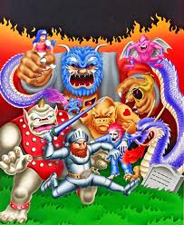

- The bane of my childhood
{kind=link}
One of the most passionate subjects mentioned during Tuesday’s lecture was that of cheating. Most students were able to express their distaste for cheating and for those who cheat; however, a definite explanation of the true meaning of the despicable action was not warranted. I believe this is because cheating has multiple meanings and variations.
First-reader MLAGANA touched on a sentiment I hold dear. Cheating is unfair and takes away from experience. An example of this is a glitch in the game Skyrim. In the game, there is a book that when used will grant the player +1 skill points in a certain field. The book if placed on a shelf, used again, but quickly discarded, allows the player to reuse the +1 skill point trick even though the original intention was an one use gift. I admit that after playing countless hours of the game I decided to use the glitch. To my astonishment, my character reached max level and dominated the rest of the game fairly easily. No sooner than after playing the game for two hours with my deity-like warrior, I stopped playing. Why? The game lost its luster. I no longer had an incentive to continue playing; thus, weakening my desire to play even more. By cheating, I was deprived of the expectation of a thrilling adventure. On the other hand, cheating has also allowed for careless fun and unfair advantages. The biggest example I can think of is any of the recent Grand Theft Auto games. I am hard press to find a person who did not use a cheat in the game. The idea of flying in an invincible helicopter, raining down fire in a faux New York City is tantalizing. I admit that the GTA games are only fun when used with the cheats. Do I feel any regrets for doing so? No, yet again, the main experience is gone although a new one is created.
I will reiterate again; I am not for cheating. I believe that hardships are meant to demoralize the player, but also to give them meaning and purpose to overcome. One of my favorite games in my childhood was Ghosts N’ Goblins. The game was brutal to me as a kid , but I loved it. The difficulty enthralled me and passing a level gave me a whole new sense of accomplishment. While I myself will not use cheats for the majority of games, I do acknowledge they are there and accept them for what they are: an easy solution.
My first impulse upon reading this post is to ask, what’s the book and where do I find it. But then I stop myself, knowing that—as you found out—when games become too easy they also become boring.
Yet there’s a paradox, as you imply. There are plenty of cheats in GTA that give the player-character god-like powers. In this case, though, the game doesn’t become dull; it can in fact become more interesting to play. So what’s the difference between Skyrim and Grand Theft Auto?
I am afraid to spoil one of the story arcs for you, but the name of the book is “Oghma Infinium”. The difference for me is the role-playing aspect of Skyrim. You start off weak and puny, progressively becoming stronger as you fight enemies. There is hardly an effort to be made when receiving an RPG in GTA. You instantly become stronger rather than working towards it. I feel that shooters are starting to recognize the “leveling up” aspect of video games such as COD and BF3, games that make you play in order to unlock essential guns and additions to make you stronger.
This is exactly some thing I must do more research into, i appreciate you for the posting.